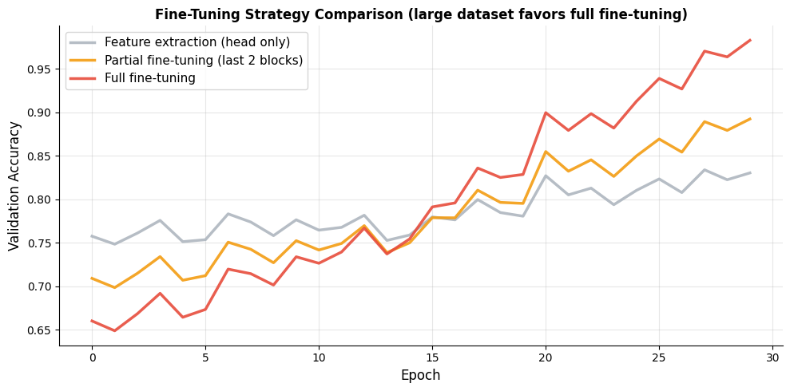
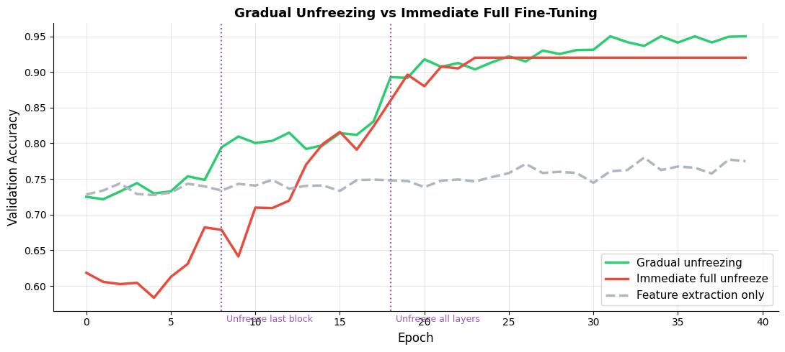
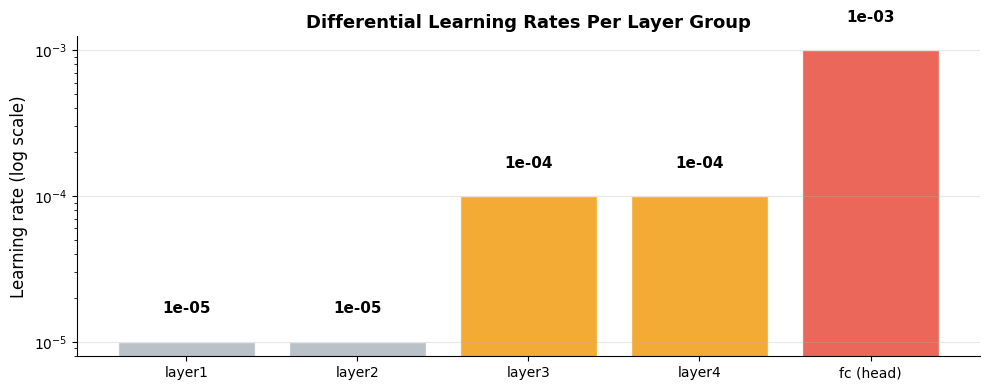
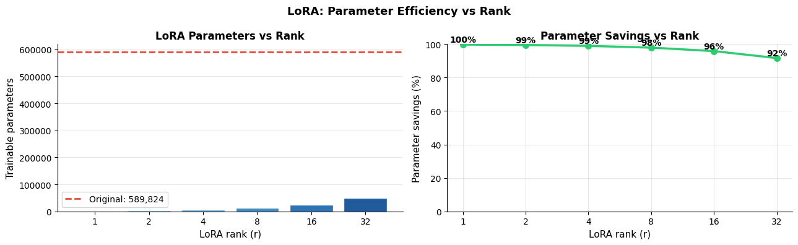

How do you fine-tune a pretrained model?#
Topics: Gradual Unfreezing · Differential Learning Rates · LR Schedulers for Fine-Tuning · HuggingFace Trainer · LoRA Basics
1. Fine-Tuning Strategies#
What it is#
Fine-tuning: update some or all pretrained weights for your target task
More powerful than feature extraction — model adapts its representations
Risk: catastrophic forgetting if done carelessly
Three strategies#
Strategy |
Frozen layers |
Trainable |
When to use |
|---|---|---|---|
Feature extraction |
All pretrained |
Head only |
Very small dataset |
Partial fine-tuning |
Early layers |
Late layers + head |
Medium dataset |
Full fine-tuning |
None |
Everything |
Large dataset |
Key intuition#
Early layers learn universal features (edges, textures) — rarely need updating
Late layers learn task-specific features — most benefit from fine-tuning
Head is always trained — randomly initialized, needs most updates
import torch
import torch.nn as nn
import matplotlib.pyplot as plt
import numpy as np
torch.manual_seed(42)
# Simulate three fine-tuning strategies
def simulate_finetuning(strategy, epochs=30):
np.random.seed(42)
epoch_list = list(range(epochs))
if strategy == 'feature_extraction':
base = 0.75
rate = 0.003
noise = 0.015
elif strategy == 'partial':
base = 0.70
rate = 0.007
noise = 0.018
else: # full
base = 0.65
rate = 0.012
noise = 0.020
accs = [base + rate*e*(1 - np.exp(-e/8)) + np.random.randn()*noise for e in epoch_list]
return accs
strategies = [
('feature_extraction', '#AEB6BF', 'Feature extraction (head only)'),
('partial', '#F39C12', 'Partial fine-tuning (last 2 blocks)'),
('full', '#E74C3C', 'Full fine-tuning'),
]
fig, ax = plt.subplots(figsize=(10, 5))
for strat, color, label in strategies:
accs = simulate_finetuning(strat)
ax.plot(accs, color=color, linewidth=2.5, label=label, alpha=0.9)
ax.set_xlabel('Epoch', fontsize=12)
ax.set_ylabel('Validation Accuracy', fontsize=12)
ax.set_title('Fine-Tuning Strategy Comparison (large dataset favors full fine-tuning)', fontsize=12, fontweight='bold')
ax.legend(fontsize=11)
ax.grid(True, alpha=0.3)
ax.spines['top'].set_visible(False); ax.spines['right'].set_visible(False)
plt.tight_layout()
plt.savefig('finetuning_strategies.png', dpi=120, bbox_inches='tight')
plt.show()

2. Gradual Unfreezing#
What it is#
Start by training only the head, then progressively unfreeze deeper layers
Prevents catastrophic forgetting — head stabilizes before disturbing pretrained weights
Each unfreeze phase uses a lower learning rate for newly unfrozen layers
Typical schedule#
Epochs 1-5: train head only
Epochs 6-10: unfreeze last block + head
Epochs 11+: unfreeze all layers with very low LR
Interview Q&A#
What is catastrophic forgetting?
Fine-tuning with high LR overwrites pretrained weights — model loses learned features
Fix: low LR for pretrained layers, gradual unfreezing, EWC
Why does gradual unfreezing work better than unfreezing all at once?
Head stabilizes first — provides better gradient signal to lower layers
Lower layers get smaller, more meaningful updates
Gotchas#
Reset optimizer when unfreezing new layers — optimizer state (Adam momentum) from old params doesn’t apply to newly unfrozen ones
Use
model.train()after unfreezing — BN layers need to be in train mode
import torch
import torch.nn as nn
import matplotlib.pyplot as plt
import numpy as np
torch.manual_seed(42)
# Simulate gradual unfreezing vs immediate full unfreeze
np.random.seed(42)
def simulate_gradual(epochs=40):
accs = []
for e in range(epochs):
if e < 8:
base, noise = 0.72, 0.01
elif e < 18:
base, noise = 0.80, 0.012
else:
base, noise = 0.87, 0.008
accs.append(min(0.95, base + 0.003*(e - (8 if e>=8 else 0)) + np.random.randn()*noise))
return accs
def simulate_immediate(epochs=40):
accs = []
for e in range(epochs):
base = 0.60 + 0.018*e*(1-np.exp(-e/12)) + np.random.randn()*0.025
accs.append(min(0.92, max(0.5, base)))
return accs
def simulate_frozen(epochs=40):
return [min(0.78, 0.73 + 0.001*e + np.random.randn()*0.008) for e in range(epochs)]
epochs = list(range(40))
grad_accs = simulate_gradual()
imm_accs = simulate_immediate()
frz_accs = simulate_frozen()
fig, ax = plt.subplots(figsize=(11, 5))
ax.plot(grad_accs, color='#2ECC71', linewidth=2.5, label='Gradual unfreezing')
ax.plot(imm_accs, color='#E74C3C', linewidth=2.5, label='Immediate full unfreeze')
ax.plot(frz_accs, color='#AEB6BF', linewidth=2.5, linestyle='--', label='Feature extraction only')
ax.axvline(8, color='#9B59B6', linestyle=':', linewidth=1.5)
ax.axvline(18, color='#9B59B6', linestyle=':', linewidth=1.5)
ax.text(8.3, 0.55, 'Unfreeze last block', fontsize=9, color='#9B59B6')
ax.text(18.3, 0.55, 'Unfreeze all layers', fontsize=9, color='#9B59B6')
ax.set_xlabel('Epoch', fontsize=12)
ax.set_ylabel('Validation Accuracy', fontsize=12)
ax.set_title('Gradual Unfreezing vs Immediate Full Fine-Tuning', fontsize=13, fontweight='bold')
ax.legend(fontsize=11); ax.grid(True, alpha=0.3)
ax.spines['top'].set_visible(False); ax.spines['right'].set_visible(False)
plt.tight_layout()
plt.savefig('gradual_unfreezing.png', dpi=120, bbox_inches='tight')
plt.show()
# Code pattern for gradual unfreezing
print("Gradual unfreezing pattern:")
print(" # Phase 1: head only")
print(" for p in model.parameters(): p.requires_grad = False")
print(" model.fc = nn.Linear(512, num_classes) # new head, unfrozen")
print()
print(" # Phase 2: unfreeze last block")
print(" for p in model.layer4.parameters(): p.requires_grad = True")
print(" optimizer.add_param_group({'params': model.layer4.parameters(), 'lr': 1e-4})")
print()
print(" # Phase 3: unfreeze everything")
print(" for p in model.parameters(): p.requires_grad = True")

Gradual unfreezing pattern:
# Phase 1: head only
for p in model.parameters(): p.requires_grad = False
model.fc = nn.Linear(512, num_classes) # new head, unfrozen
# Phase 2: unfreeze last block
for p in model.layer4.parameters(): p.requires_grad = True
optimizer.add_param_group({'params': model.layer4.parameters(), 'lr': 1e-4})
# Phase 3: unfreeze everything
for p in model.parameters(): p.requires_grad = True
3. Differential Learning Rates#
What it is#
Use different learning rates for different layer groups
Pretrained layers: very small LR (1e-5 to 1e-4) — preserve pretrained knowledge
New head: larger LR (1e-3) — needs to learn fast from random init
Key intuition#
Lower layers need smaller updates — their features are already good
Higher LR for new layers, lower LR for old layers — controlled adaptation
How to implement#
Pass list of param group dicts to optimizer
Each dict specifies
paramsand optionallylr,weight_decay, etc.
Gotchas#
Param groups are order-sensitive — earlier groups get their own lr
Check
optimizer.param_groupsto verify setupWhen adding new param groups after initialization, use
optimizer.add_param_group()
import torch
import torch.nn as nn
import matplotlib.pyplot as plt
import numpy as np
try:
from torchvision import models
model = models.resnet18(weights='DEFAULT')
model.fc = nn.Linear(model.fc.in_features, 5)
# Differential learning rates
optimizer = torch.optim.Adam([
{'params': model.layer1.parameters(), 'lr': 1e-5},
{'params': model.layer2.parameters(), 'lr': 1e-5},
{'params': model.layer3.parameters(), 'lr': 1e-4},
{'params': model.layer4.parameters(), 'lr': 1e-4},
{'params': model.fc.parameters(), 'lr': 1e-3},
])
print("Optimizer param groups:")
for i, pg in enumerate(optimizer.param_groups):
n_params = sum(p.numel() for p in pg['params'])
print(f" Group {i}: lr={pg['lr']}, params={n_params:,}")
# Visualize differential LRs
layer_names = ['layer1', 'layer2', 'layer3', 'layer4', 'fc (head)']
lrs = [1e-5, 1e-5, 1e-4, 1e-4, 1e-3]
colors = ['#AEB6BF', '#AEB6BF', '#F39C12', '#F39C12', '#E74C3C']
fig, ax = plt.subplots(figsize=(10, 4))
bars = ax.bar(layer_names, lrs, color=colors, alpha=0.85, edgecolor='white')
ax.set_yscale('log')
ax.set_ylabel('Learning rate (log scale)', fontsize=12)
ax.set_title('Differential Learning Rates Per Layer Group', fontsize=13, fontweight='bold')
ax.grid(True, alpha=0.3, axis='y')
ax.spines['top'].set_visible(False); ax.spines['right'].set_visible(False)
for bar, lr in zip(bars, lrs):
ax.text(bar.get_x() + bar.get_width()/2, bar.get_height() * 1.5,
f'{lr:.0e}', ha='center', va='bottom', fontsize=11, fontweight='bold')
plt.tight_layout()
plt.savefig('differential_lr.png', dpi=120, bbox_inches='tight')
plt.show()
except ImportError:
print("torchvision not installed")
print("Pattern for differential learning rates:")
print(" optimizer = torch.optim.Adam([")
print(" {'params': model.body.parameters(), 'lr': 1e-5},")
print(" {'params': model.head.parameters(), 'lr': 1e-3},")
print(" ])")
Optimizer param groups:
Group 0: lr=1e-05, params=147,968
Group 1: lr=1e-05, params=525,568
Group 2: lr=0.0001, params=2,099,712
Group 3: lr=0.0001, params=8,393,728
Group 4: lr=0.001, params=2,565

4. HuggingFace Fine-Tuning#
What it is#
HuggingFace
transformerslibrary provides pretrained NLP modelsAutoModel,AutoTokenizer— load any model by nameTrainer— handles training loop, evaluation, checkpointing
Key classes#
AutoTokenizer— tokenizes text for the specific modelAutoModelForSequenceClassification— adds classification headTrainingArguments— configure training hyperparametersTrainer— wraps everything into a clean training API
Gotchas#
Always use the tokenizer that matches the model — vocab must match
tokenizer(text, truncation=True, padding=True)— always truncate and padHuggingFace models return a dict-like object — access logits with
output.logits
# HuggingFace fine-tuning reference patterns
# Requires: pip install transformers datasets
print("=== HuggingFace Fine-Tuning Patterns ===")
print()
print("1. Load tokenizer and model:")
print(" from transformers import AutoTokenizer, AutoModelForSequenceClassification")
print(" model_name = 'distilbert-base-uncased'")
print(" tokenizer = AutoTokenizer.from_pretrained(model_name)")
print(" model = AutoModelForSequenceClassification.from_pretrained(model_name, num_labels=2)")
print()
print("2. Tokenize data:")
print(" def tokenize(batch):")
print(" return tokenizer(batch['text'], truncation=True, padding='max_length', max_length=128)")
print(" dataset = dataset.map(tokenize, batched=True)")
print()
print("3. TrainingArguments:")
print(" from transformers import TrainingArguments, Trainer")
print(" args = TrainingArguments(")
print(" output_dir='./results',")
print(" num_train_epochs=3,")
print(" per_device_train_batch_size=16,")
print(" per_device_eval_batch_size=32,")
print(" learning_rate=2e-5,")
print(" weight_decay=0.01,")
print(" warmup_steps=100,")
print(" evaluation_strategy='epoch',")
print(" save_strategy='epoch',")
print(" load_best_model_at_end=True,")
print(" )")
print()
print("4. Trainer:")
print(" trainer = Trainer(")
print(" model=model,")
print(" args=args,")
print(" train_dataset=train_ds,")
print(" eval_dataset=val_ds,")
print(" compute_metrics=compute_metrics,")
print(" )")
print(" trainer.train()")
=== HuggingFace Fine-Tuning Patterns ===
1. Load tokenizer and model:
from transformers import AutoTokenizer, AutoModelForSequenceClassification
model_name = 'distilbert-base-uncased'
tokenizer = AutoTokenizer.from_pretrained(model_name)
model = AutoModelForSequenceClassification.from_pretrained(model_name, num_labels=2)
2. Tokenize data:
def tokenize(batch):
return tokenizer(batch['text'], truncation=True, padding='max_length', max_length=128)
dataset = dataset.map(tokenize, batched=True)
3. TrainingArguments:
from transformers import TrainingArguments, Trainer
args = TrainingArguments(
output_dir='./results',
num_train_epochs=3,
per_device_train_batch_size=16,
per_device_eval_batch_size=32,
learning_rate=2e-5,
weight_decay=0.01,
warmup_steps=100,
evaluation_strategy='epoch',
save_strategy='epoch',
load_best_model_at_end=True,
)
4. Trainer:
trainer = Trainer(
model=model,
args=args,
train_dataset=train_ds,
eval_dataset=val_ds,
compute_metrics=compute_metrics,
)
trainer.train()
5. LoRA Basics#
What it is#
Low-Rank Adaptation — efficient fine-tuning for large models
Freezes original weights, adds small trainable low-rank matrices alongside them
Only ~1% of parameters are trained — huge memory and compute savings
Key intuition#
Weight update matrix
dWcan be approximated asdW = A @ Bwhere A and B are smallInstead of updating full
W(shape d×d), trainA(d×r) andB(r×d) where r << dAt inference:
W_effective = W + A @ B
When to use#
Fine-tuning LLMs (GPT, LLaMA) on consumer hardware
When GPU memory is the bottleneck
When you need many task-specific adapters on one base model
Gotchas#
Rank
ris the key hyperparameter — typically 4, 8, or 16Higher rank = more capacity but more parameters
Use
peftlibrary from HuggingFace for production LoRA
import torch
import torch.nn as nn
import matplotlib.pyplot as plt
# LoRA implementation from scratch (conceptual)
class LoRALinear(nn.Module):
def __init__(self, original_layer, rank=4, alpha=1.0):
super().__init__()
in_f = original_layer.in_features
out_f = original_layer.out_features
# Freeze original weights
self.weight = original_layer.weight
self.bias = original_layer.bias
self.weight.requires_grad = False
if self.bias is not None:
self.bias.requires_grad = False
# Trainable low-rank matrices
self.lora_A = nn.Parameter(torch.randn(rank, in_f) * 0.01)
self.lora_B = nn.Parameter(torch.zeros(out_f, rank))
self.alpha = alpha
self.rank = rank
def forward(self, x):
# Original frozen computation + low-rank update
original = nn.functional.linear(x, self.weight, self.bias)
lora_out = (x @ self.lora_A.T @ self.lora_B.T) * (self.alpha / self.rank)
return original + lora_out
# Demo
original = nn.Linear(128, 64)
lora = LoRALinear(original, rank=8, alpha=8.0)
orig_params = sum(p.numel() for p in original.parameters())
lora_trainable = sum(p.numel() for p in lora.parameters() if p.requires_grad)
print(f"Original params : {orig_params:,}")
print(f"LoRA trainable params: {lora_trainable:,} ({100*lora_trainable/orig_params:.1f}% of original)")
x = torch.randn(4, 128)
out = lora(x)
print(f"Output shape: {out.shape}")
# Visualize parameter efficiency across ranks
ranks = [1, 2, 4, 8, 16, 32]
in_f, out_f = 768, 768 # typical transformer layer
orig_p = in_f * out_f
lora_params = [(r * in_f + r * out_f) for r in ranks]
savings = [100*(1 - lp/orig_p) for lp in lora_params]
fig, axes = plt.subplots(1, 2, figsize=(13, 4))
colors = plt.cm.Blues(np.linspace(0.4, 0.9, len(ranks)))
import numpy as np
bars = axes[0].bar([str(r) for r in ranks], lora_params, color=colors, alpha=0.9, edgecolor='white')
axes[0].axhline(orig_p, color='#E74C3C', linewidth=2, linestyle='--', label=f'Original: {orig_p:,}')
axes[0].set_xlabel('LoRA rank (r)', fontsize=11)
axes[0].set_ylabel('Trainable parameters', fontsize=11)
axes[0].set_title('LoRA Parameters vs Rank', fontsize=12, fontweight='bold')
axes[0].legend(fontsize=10)
axes[0].grid(True, alpha=0.3, axis='y')
axes[0].spines['top'].set_visible(False); axes[0].spines['right'].set_visible(False)
axes[1].plot([str(r) for r in ranks], savings, color='#2ECC71', linewidth=2.5, marker='o', markersize=7)
axes[1].set_xlabel('LoRA rank (r)', fontsize=11)
axes[1].set_ylabel('Parameter savings (%)', fontsize=11)
axes[1].set_title('Parameter Savings vs Rank', fontsize=12, fontweight='bold')
axes[1].set_ylim(0, 100)
axes[1].grid(True, alpha=0.3)
axes[1].spines['top'].set_visible(False); axes[1].spines['right'].set_visible(False)
for i, (r, s) in enumerate(zip(ranks, savings)):
axes[1].text(i, s + 1.5, f'{s:.0f}%', ha='center', fontsize=10, fontweight='bold')
plt.suptitle('LoRA: Parameter Efficiency vs Rank', fontsize=13, fontweight='bold')
plt.tight_layout()
plt.savefig('lora_efficiency.png', dpi=120, bbox_inches='tight')
plt.show()
print("Production LoRA with HuggingFace PEFT:")
print(" from peft import LoraConfig, get_peft_model")
print(" config = LoraConfig(r=8, lora_alpha=16, target_modules=['q_proj','v_proj'])")
print(" model = get_peft_model(base_model, config)")
print(" model.print_trainable_parameters()")
Original params : 8,256
LoRA trainable params: 1,536 (18.6% of original)
Output shape: torch.Size([4, 64])

Production LoRA with HuggingFace PEFT:
from peft import LoraConfig, get_peft_model
config = LoraConfig(r=8, lora_alpha=16, target_modules=['q_proj','v_proj'])
model = get_peft_model(base_model, config)
model.print_trainable_parameters()
Interview Q&A#
What is LoRA and why is it useful?
Adds small trainable low-rank matrices to frozen pretrained weights
Trains ~1% of parameters vs full fine-tuning — enables LLM fine-tuning on consumer GPUs
Multiple LoRA adapters can be swapped on the same base model
What rank should you use for LoRA?
r=4 or r=8 works for most tasks
Higher rank = more capacity but more parameters
For LLMs: r=8 with alpha=16 is a common starting point
LoRA vs full fine-tuning — which is better?
LoRA often matches full fine-tuning quality at a fraction of the compute
Full fine-tuning is better when the target domain is very different from pretraining
LoRA is preferred when memory is constrained or multiple tasks need adapters
Gotchas#
Initialize lora_A with small random values, lora_B with zeros — ensures output unchanged at start
alpha/rank ratio controls effective learning rate of LoRA update — tune carefully
Merge LoRA weights into base model before deployment:
model.merge_and_unload()